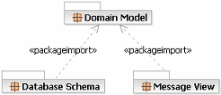
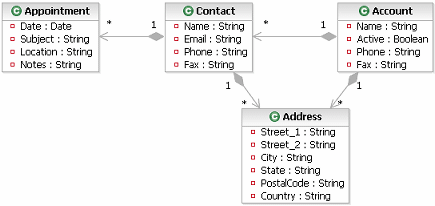
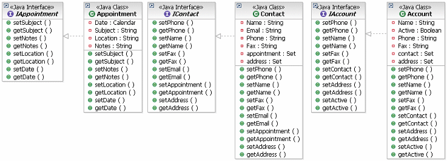
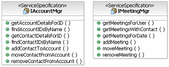
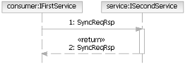
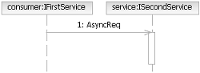
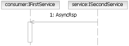
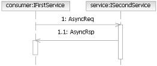
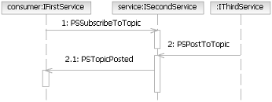

|
| This task describes the required actions for developing a comprehensive message design model (catalog). It discusses, as background, message exchange patterns and the relationship of the domain model to the message model. Design considerations for message granularity and message performance are also outlined. |
| Дисциплины: Анализ и проектирование |
|
Взаимосвязи
| Роли | Основной исполнитель:
| Дополнительные исполнители:
|
| Входы | Обязательный:
| Необязательный:
|
| Выходы |
|
Основное описание
| Messages between communicating services and components are a critical part of a SOA. These include not only the input and
output messages of a given service invocation but also the internal message format to be used within the enterprise as the
flow of information passes through the layers of the application architecture. In many cases, a common message format is recommended.
As services include input and output messages, this task focuses on:
-
identification and specification of the format and content of input and output messages of a service,
-
its relation to the underlying data models,
-
the internal common message format and considerations and
-
decisions on how to map each of these messages to another.
The specification of messages for the service model should take into consideration perspectives from enterprise
architecture/application architecture, data architecture and integration architecture. This includes:
-
Message standards defined at an enterprise or application level
-
Appropriate meta or data model that are part of a data architecture
-
Message transformation standards that are part of an integration architecture.
During specification, it is important to understand an organization’s standards, if available, in each of the 3 areas
of architecture. Message specifications and data models are closely tied. The data model consists of underlying
entities and their relationships, a subset of which may be sent out as part of an output message and received as an
input from an incoming message. Thus the mapping between the message formats and the underlying data model or data
architecture is a key architectural consideration. In some cases, patterns and their implementation such as the
Enterprise Service Bus may handle the transformation (and routing) of messages. In many cases, we may need an explicit
handler to transform messages from and to data models.
In most object-oriented programming languages, behavior invocation is based either upon method calls or message passing
paradigms. C++ for example uses tables of function pointers to invoke the correct method. Smalltalk on the other hand
passes messages whose receiver is evaluated at execution time. Service-oriented solutions are inherently message based
and while bindings to programming languages may present method based interfaces for clients, this is not the reality of
communication with or between services. Another facet of service messaging is that more and more services are being
developed with asynchronous interfaces as opposed to the fundamentally synchronous nature of method calls.
In the enterprise integration arena, one class of technology has been used with success for a number of years: Message
Oriented Middleware (or MOM). This set of technologies is manifest in products such as queue managers and message
brokers. It has provided IT organizations with a flexible, scalable, and robust method for loosely connecting
applications.
It has been noted that Service-Oriented Architecture (SOA) is an evolution of component-based development. In some
respects this evolution takes into account many of the lessons learned from the success of MOM: how to loosely couple
systems effectively. The MOM infrastructure provides the following characteristics that allow communicating systems to
evolve independently.
-
Message Queuing, for reliable delivery of messages even in the event of network or system failures.
-
Message Routing, both in terms of routing around the network for performance and reliability and advanced
routing based on the message content.
-
Message Transformation, so that a calling service can post a request for a "product" when the receiving
service can accepts requests for "items."
-
Message Adapters, to allow systems that were not originally developed with MOM interfaces to be addressed by
MOM aware services.
|
Шаги
|
Use Message Standards
When defining the message specifications for services identified, it is important to take into account an enterprise’s
message standards if they exist. Where message standards are not defined, it
is advisable to develop them. Where industry message schemas exist, it is recommended to leverage them. For example, XML messaging specifications have been defined for the finance,
government, travel (OTA XML [Open Travel Alliance, http://www.opentravel.org/online_schema.cfm]) and communications
industries. In addition, there are non-industry specific schemas available
from OAGIS [Open Applications Group, http://www.openapplications.org/index.htm].
Common
message format
Common messages refer to messages that are transferred across the tiers of a n-tier architecture. Typically, user-interface information is captured, sent through to a controller
tier, processed in the business or application layers and then passed on to a persistence layer or back-end legacy
system. During each of these transfers, a message is being exchanged
between tiers where each may have a different format. The key thing is to
agree on one standard for a common message format within the enterprise so as to overcome any format translation
overhead where an Enterprise Service Bus (ESB) is not used or when its use is deemed expensive in terms of format
translation. The use of an ESB will take care of many of these mediations,
transformations and routing. This is the Integration layer as depicted in
the SOA layers model.
In some cases, it may suffice to agree on the outgoing and incoming message formats. The issue of a common message format is a key architectural decision: you may
choose to “roll your own” as specified here, adopt industry models such as travel industry’s OTA XML or adopt
non-industry specific models such as those defined by OAGIS. In some
cases, the decision will be to use a common enterprise message format that updates fields in the message and passes it
on to the next tier for further processing. If such a common scheme cannot
be achieved due to political factors, then adapters that translate messages to an internal common message format can be
designed. They can also be leveraged as part of an ESB.
ISV
Considerations :
Messages that invoke services realized within ISV packages may need to be augmented with data attributes to satisfy
constraints within the ISV package data model. Such data elements may be
identified through analysis of the realized service within the ISV package Component or may also be identified through
the ISV package bottom-up service analysis. Since these attributes may not
be identified until service realization, they may need to be retrofitted into the common message once they are
identified.
Common Message format and data architecture
In general, services should not indicate anything about the underlying data
models. Rather, they should be used to encapsulate the underlying data
models whose data stores are leveraged by the service components that realize the services. Thus, services that are view, edit, delete, add search and other operations on a
database may not be good candidates for services, but could be used as underlying component operations as they are used
today.
Existing data architectures that
define conceptual, logical or physical data models are required sources in defining common message formats. The definitions of common message formats should be coordinated with data
architecture efforts and data models. This analysis will ensure the
availability of proper data stores and schemas for the service components that will realize new services. Existing data architecture will be enhanced to accommodate new services if new
data needs to be added to the underlying systems.
In many enterprises, existing systems
often reflect the existence of silos and data islands that collaborate through batch processes. Migrating away from isolated data stores is possible through the means of
services. Identifying a service provider’s data sources is accomplished
during service realization.
ISV Considerations: Logical Data Model needs to accommodate the pre-defined,
often implicit data models embodied in ISV packages. Thus message transfer
between packaged applications and the existing data models need to occur. This is often done through APIs offered by the ISV’s. In a SOA, adapters to these ISV data models become important, especially if the
ISV is not exposing its underlying data and functionality through services.
Note that in some cases where the ISV
data model is accessible, it may be possible to customize the model to accommodate the messages required to support the
identified services. Conversely, if the data model is not accessible,
service messaging may be constrained by the data model contained within the ISV. A mediation mechanism can also be employed to curtail the problem. Mediation, such as that provided by an ESB can be used in this context to
support interfacing with ISV packages. The ISV data model may also dictate
additional attributes that are required above and beyond those required to implement the service.
Common message format with all
relevant services
Common
message formats must be reconciled with the input/output messages of individual services, so they are related and
assigned to allow appropriate services to use and update them as needed. Services may need to extract information from or expect output from the common
enterprise message format. These are documented in the Service Common
Message Format template.
|
Reusing the Domain Model
In the concept Concept: Domain Design, the notion of domain modeling was outlined, similar to the
notion of an analysis model or business-analysis model in representing core concepts from the business domain in a
technology independent manner. It is clear that the messages used by services are technology aware (if not
technology-specific in the case of XML Schema used for Web Services) in the same way the database schema used to store
the domain data is technology specific within the service. In fact, we may consider the following relationship.

This demonstrates the relationship between the domain model used for discovery of the key domain elements and the
message model as the realization of the domain model as a set of elements passed into and returned from services.

The following is a typical Java/component model where we can see the separation of the Interface from the Class and the
inclusion of "accessor" functions to get and set the value of the state variables. This is a very common approach, but
it has the disadvantage that, if the consumer and component are in different address spaces or on different machine,
the cost of communicating each call is high in terms of accessing the entire state of any one component.

Another issue is the relationships between components, the notion that an Account has a set of Customers is difficult
to develop in this style and usually ends up in managing lists of identifiers used to retrieve individual objects.
In developing a service model we might use a data-driven service identification approach leading to the specification of
an AccountMgr service and a MeetingMgr service. The first service specification acts as the central location for
managing all accounts and contacts. In fact, the core data model for the Customer Relationship Management (CRM)
solutions was built using this and other services. The second service has been separated because it can be used by the
CRM solutions and other solutions for booking meetings and it will interface with the enterprise Groupware
applications.
The following is a sample from the model; it shows the service specifications, the messages can be assumed from the
domain model above.

|
Understand Message Exchange Patterns
When thinking about messages, there is a natural tendency to consider them to be simply the parameters to operations.
This is made more likely because the UML representation of services uses operations with parameters and the Web
Services Description Language (WSDL 1.1) uses a similar approach. However, when thinking in terms of Services and Service Specifications, it is more helpful to think in terms
of messages as reusable elements that are either produced by or used/consumed by a service operation. In services
parlance, the operation simply becomes a message exchange, albeit a named exchange on a service that is
distinguishable from another exchange that may use the same input and output messages.
The notion of message exchange patterns has been of interest in the Web services standards world, as a part of
the analysis of the use of services in developing standards to support their specification. A message exchange pattern
names a particular combination of produced, used, or consumed message between two services (or between a service and a
consumer) and provides a common vocabulary for service designers to describe operations on service specifications.
The following lists common exchange patterns that can be used in the definition of service specifications. Such
patterns are usually found during the modeling of Service Collaborations.
Synchronous Request/Response: This is in effect a traditional method invocation where the service consumer sends
a message to a service and then blocks waiting until a reply is received from the service.

One Way Message: In this case, the consumer simply sends a message to the service, not waiting for or expecting
a reply. This pattern can be considered an asynchronous method call with no reply type, meaning that the service
consumer continues execution after the message is sent, rather than waiting for the service to process the message.

Notification: In this case, the service is responsible for sending messages back to the consumer (usually
another service). To accomplish thi,s the consumer has to have somehow registered with the service so that the service
knows where to send the notification messages.

Asynchronous Request/Response: This is a combination of the one-way message and notification. The service
consumer sends a message, including a reply-to address. When the service completes its processing, it calls the
originator back. The fact that service consumers send the first message in an asynchronous manner does require them to
keep track of all sent requests so that responses, when received from the service, can be correlated to the original
request.

Publish/Subscribe: Again this is a combination. A service consumer registers interest in a "topic" with a
publication service. Other services or service consumers publish messages (send messages) to the publication service
identifying the topic associated with the message. If the topic matches previously registered consumers, they are
notified of the new message. In this case it is possible to very loosely couple the services participating. Any
consumer or publisher only needs to know the location of the publication service and new consumers can be added to the
solution without significant effort.

|
Manage Message Granularity
Services are intended to provide large-granularity operations. As such, the messages that flow in and out of such
operations tend to be large-grained also. This concern was originally highlighted early in the deployment of Web
Service solutions where the use of HTTP as a transport, SOAP as a protocol, and XML as a wire format tended to lead to
relatively slow responses and very high bandwidth requirements. For example, consider a request for a stock quote from
a service. A simple stock quote was often demonstrated in the early Web Services days. The ticker symbol is four
characters and the response is a decimal number. In an RPC style, binary protocol we might expect that the message
identifier might add some overhead, let's say 8 bytes, and so we could expect somewhere in the region of 8+4 for the
request and 8+8 (for a high precision decimal) in response. With HTTP/SOAP, we might expect something of the following
form:
|
Request
|
Response
|
SOAPAction: "http://www.webservicex.net/Quote"
User-Agent: MyAgent 1.0
Content-Type: text/xml; charset=UTF-8
<?xml version="1.0" encoding="UTF-8"?>
<soap:Envelope
xmlns:soap="http://schemas.xmlsoap.org/soap/envelope/"
xmlns:tns="http://www.webservicex.net/">
xmlns:xs="http://www.w3.org/2001/XMLSchema">
<soap:Body>
<tns:Quote>
<tns:Symbol>IBM</tns:Symbol>
</tns:Quote>
</soap:Body>
</soap:Envelope>
|
HTTP/1.1 200 OK
X-Powered-By: ASP.NET
Connection: close
Content-Length: 522
X-AspNet-Version: 1.1.4322
Date: Mon, 21 Mar 2005 00:34:21 GMT
Content-Type : text/xml; charset=utf-8
Server : Microsoft-IIS/6.0Cache-Control: private, max-age=0
<?xml version="1.0" encoding="utf-8"?>
<soap:Envelope
xmlns:soap="http://schemas.xmlsoap.org/soap/envelope/">
xmlns:xsi="http://www.w3.org/2001/XMLSchema-instance">
xmlns:xsd="http://www.w3.org/2001/XMLSchema">
<soap:Body>
<QuoteResponse xmlns="http://www.webservicex.net/">
<Quote><Last>89.28</Last>
</Quote>
</QuoteResponse>
</soap:Body>
</soap:Envelope>
|
Early adopters of Web Service Technology came to two conclusions. First, services were optimized for a small number of
operations providing data as documents rather than the more complex style of traditional component models. This has the
advantage of amortizing the overhead of the protocols across a bigger actual data payload. Also, between services in an
enterprise, at least between services within the same solution, smaller,simpler protocol bindings were chosen and
HTTP/SOAP was reserved for situations where it was necessary, such as interfacing to services outside the enterprise.
This notion is not entirely new. Even in the component world, the Value Object pattern, or the J2EE Service Facade are
both approaches to reduce the number of communications round-trips between client and server. Both use the notion of
sending a complete copy of the component state to the client rather than using the traditional accessor functions. For
services, we may also like to consider the fact that services are being developed that are more closely aligned with
business models, especially business process models. As such, messages come to reflect common business documents in the
same way EDI Transaction Sets (Electronic Data Interchange) represent business documents such as orders, invoices,
shipping notices, and so on.
|
Manage Message Exchange Performance
In general, the use of large messages is valuable in overcoming communications performance, although in some cases the
large data message can be a problem. For example, in the SOAP messages above, we saw how the message size, using HTTP,
SOAP, and XML significantly increased the size of the data. This has been a complaint of early systems built using Web
Services technologies. On the other hand, these issues have allowed us to learn some interesting lessons such as
considering performance in terms of code performance, message design, and protocol choice as an early design activity.
One important aspect to consider is that as we are moving large chunks of state from service to consumer or service to
service, these messages actually represent stale snapshots of the service state. So, one of the considerations is to
explicitly manage this "staleness" by identifying the time the data can be considered reliable or to "lease" it to the
consumer such that it expires after some amount of time. For more information, see the white paper Using Service-Oriented Architecture and Component-Based Development to Build Web Service
Applications.
Another topic that has to be considered is the caching of content. Caching is usually a concern that is dealt with as a
performance optimization for applications, but in an service-oriented solution, the distributed nature and
message-based communication lends itself well to the insertion of caches between consumers and services. These caches
are not the typical database caches used for optimizing queries, but more like caches used in web servers and web
proxies. In fact, in the case of Web Services using HTTP and SOAP, these proxies may be used as caches to serve up
service responses in certain situations.
The issues however, in regard to the use of any cache, are really how the cache understands the policies used to serve
content from the cache and how a service can invalidate the cache. The technical infrastructure used to host and manage
deployed services should provide caching capabilities. One area of service policy we expect to see in the future is the
provision of cache management information.
|
|
Дополнительные сведения
© Copyright IBM Corp. 1987, 2006. Все права защищены..
|
|